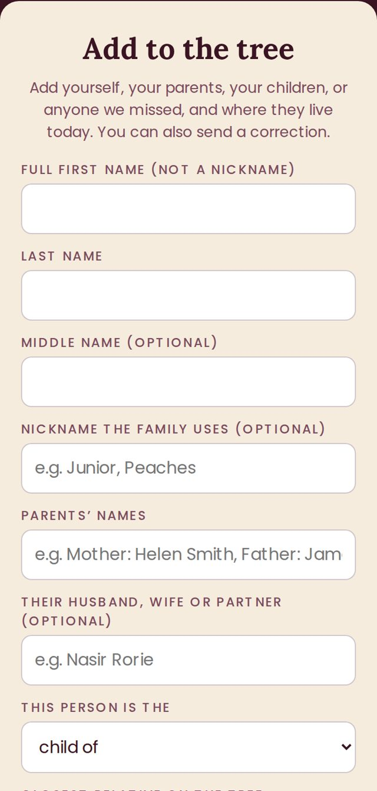
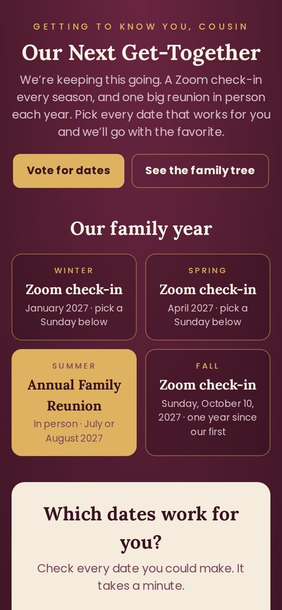

Radcliffe · 3 Sisters · Shelton
How to use our family site
A quick walkthrough from Cousin Ameer. Press play and follow along, or just scroll.
Listen to Cousin Ameer walk you through it
-
Open the family tree
The chart starts with Gertrude Foster Radcliffe, the mother of the three Radcliffe sisters: Alva, Beatrice and Miranda. Every branch grows down from them.

-
Tap a name to open a family
A name with a small gold number has children under it. Tap it to open that family, and tap again to close it.
Tap Open all to see everyone at once. Use + and − to zoom, Fit to see the whole tree, and drag with your finger to move around.

-
Add someone or fix a name
Tap List at the top. To add a son or daughter, tap the + next to their parent's name. The form opens with the parent already picked.
To fix a name or add a last name, tap the name itself.

-
See where the family lives
Scroll down to Where the family lives and tap any state. You'll see everyone who lives there and which line they come from.

-
Fill in the form
Put your full first name, your last name, your parents' names, and the person you're closest to on the tree. You can add your husband, wife or partner too.
Your email is always private. Your phone number is private too, unless you check Show my phone number on the tree so family can tap to call you.
After you press send, your name shows up on your own phone right away, and for everyone else within the hour.

-
Vote on our next get-together
We're keeping this going: a Zoom check-in every season and an in-person reunion next summer. Check every date that works for you.

-
Our family history
The stories you shared on the call, from Piney Grove in North Carolina to our roots in Sierra Leone, Angola and Cameroon. Have a story, an old photo or an Ancestry.com tree? There's a spot right on the page to send it.